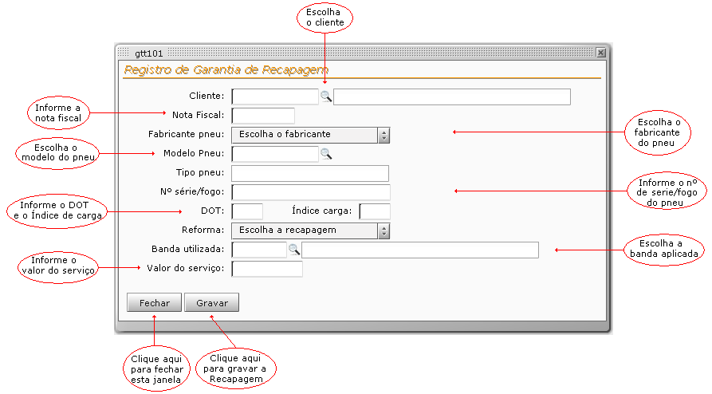

Tela : Registro de Garantia de Recapagem
 |
Esta tela poderá ser acessada através da opção Garantia do menu principal.
obs: Todos os campos são de informação obrigatória.
Clique no botão Gravar para registrar os dados e aguarde a geração do certificado de garantia.
O certificado de garantia numerado, deverá ser impresso e anexado as vias da nf entregues ao cliente.